グランヴィリオホテル丹波篠山
喫食時間管理表
操作説明書
2026年10月版 ／ 画面の写真のお客様名・人数はすべて説明用の架空のものです
目次
- はじめに(ログイン・画面の見方・ロールとできること)
- 夕食・朝食時間管理表
- CSVアップロード(宿泊者リストの取り込み)
- テーブルアサイン
- 夕食集計・朝食集計
- チャット
- 操作ログ
- 管理者ページ
- 困ったときは(よくある質問)
1. はじめに
ログイン
管理者から受け取ったログインIDとパスワードでログインします。ログインは12時間有効です。パスワードは画面右上の「パスワード変更」から自分で変えられます(4文字以上)。
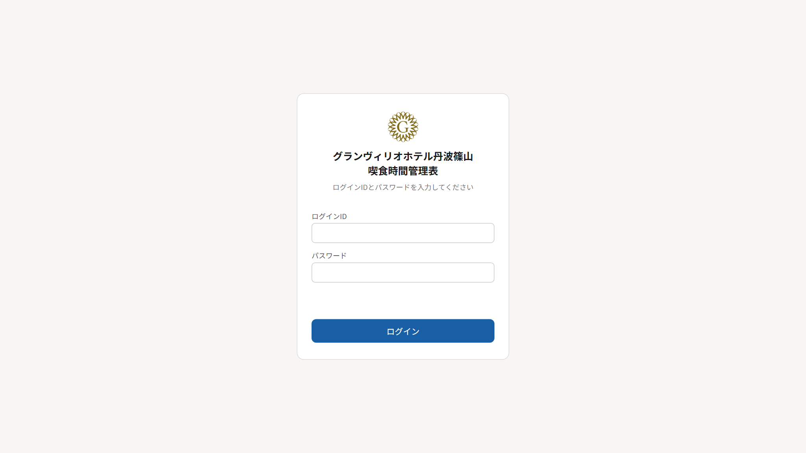
ログイン画面
画面の見方
- 上部バー: 右側に「アップロード」(フロント・管理者のみ)、「パスワード変更」「ログアウト」。
- 左のメニュー: 「夕食」(夕食時間管理表 / テーブルアサイン / 夕食集計)、「朝食」(朝食時間管理表 / 朝食集計)、「共通」(チャット / 操作ログ / 操作説明)の3つに線で分かれています。管理者には「管理者ページ」も表示されます。矢印ボタンでメニューを細くたためます(たたむと見出しは消え、線だけが残ります)。スマホでは左上の三本線で開きます。
- チャットに未読があると、チャットの横に赤い「3件」のような件数が出ます(100件以上は「99+件」、たたんだときは数字だけ)。新しい未読が届いたときは、件数が数秒間ふくらむように動いて知らせます。
ロールとできること
| できること | developer | 管理者 | フロント | レストラン |
|---|
| 管理表の閲覧・予約の追加/編集/削除・人数入力・時間枠の追加/削除 | ○ | ○ | ○ | ○ |
| 「入場済」にする・取り消す | ○ | × | × | ○ |
| CSVアップロード(宿泊者リストの取り込み) | ○ | ○ | ○ | × |
| テーブルの割り当て・卓メモ | ○ | ○ | ○ | ○ |
| テーブル配置の編集 | ○ | ○ | × | ○ |
| 集計・チャット・操作ログ・操作説明 | ○ | ○ | ○ | ○ |
| 管理者ページ(ユーザー管理) | ○ | ○ | × | × |
2. 夕食・朝食時間管理表
その日の夕食(朝食)の予約を一覧で管理する画面です。夕食と朝食は同じ操作です。
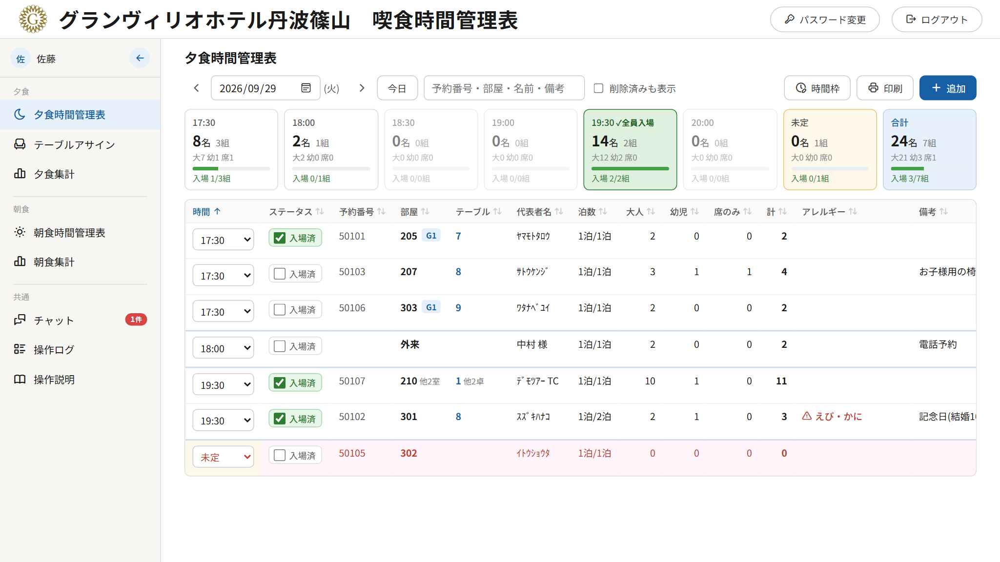
夕食時間管理表
日付を変える・探す
- 「＜」「＞」で前日・翌日、「今日」で今日に戻ります。カレンダーから日付を選ぶこともできます。
- 背景色: 今日は白、昨日以前はグレー、翌日以降は薄い青です(見ている日付を間違えないため)。
- 検索欄: 予約番号・部屋・名前・アレルギー・備考で絞り込み。ひらがな・全角カナでも半角カナの名前に当たります(「おがわ」で「ｵｶﾞﾜ」)。「G」と入れるとグループの予約すべて、「G1」と入れるとグループ1の予約だけを表示します。
- 上の時間枠のカードで、時間ごとの人数・組数(大人/幼児/席のみの内訳)が分かります。
- カードの下の緑のバーと「入場 3/6組」は、その時間の入場済みの組数です。全員が入場すると、カードが緑になり「✓全員入場」と表示されます。
- 時間枠のカードをクリックすると、その時間の予約だけを表示します(「未定」のカードは時間未定の予約だけ)。同じカード・「合計」・「絞り込みを解除」で元に戻ります。絞り込んだまま「印刷」すると、その時間だけが印刷されます。
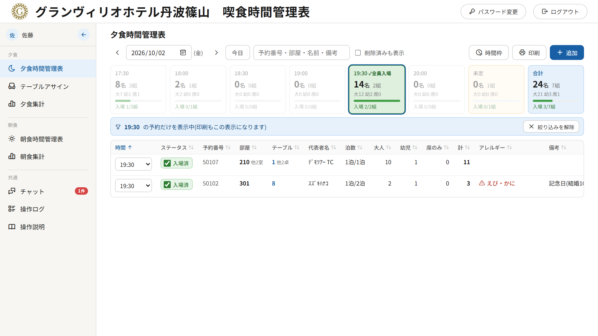
19:30のカードで絞り込んだところ(19:30は全員入場済みなのでカードが緑)
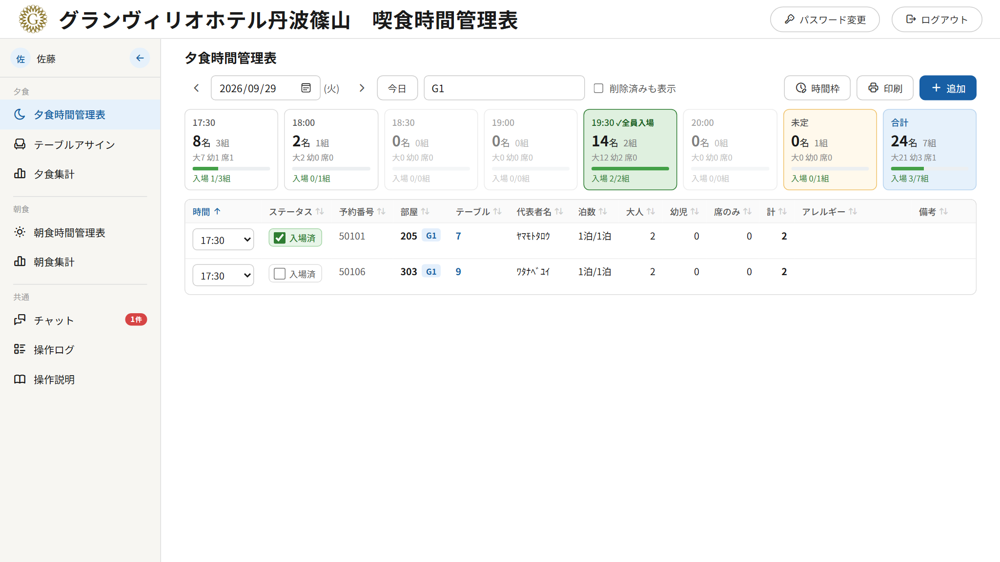
検索欄に「G1」と入れて、グループ1の予約だけを表示したところ
一覧の見方
| 表示 | 意味 |
|---|
| 赤い文字・薄いピンクの行 | 大人が0人(人数が未入力)の予約。CSVで取り込んだ直後はこの状態です。 |
| 2泊/3泊 | 連泊の2泊目以降(何泊目/泊数)。 |
| 210 他2室 | 複数の部屋の予約。マウスを重ねると全部の部屋番号が出ます。 |
| G1・G2… | グループ登録した予約。 |
| テーブル列(夕食のみ) | 割り当てた卓番号。3卓以上は「1 他9卓」のように表示し、マウスを重ねると全部の卓番号が出ます。 |
| 計 | 夕食は大人＋幼児(席のみは含めません)、朝食は大人＋幼児＋席のみの全員です。夕食と朝食で数え方が違うので注意してください。時間枠のカードの人数も同じ数え方です。 |
| ⚠ 赤字 | アレルギー。 |
見出しをクリックすると並べ替え(もう一度で逆順)。初期は時間順で、時間の境目に線が入ります。
人数を入力する(一覧から直接)
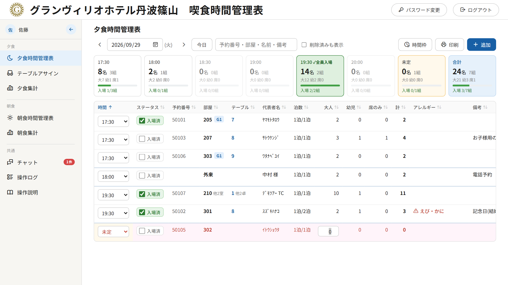
人数の数字をクリックすると、その場で入力できます
- 大人・幼児・席のみの数字をクリックします。
- 数字を入れて Enter(保存して次の行の同じ欄へ)または Tab(右の欄へ)。Esc で取り消し。
ヒント: CSVで取り込んだ後は、大人の欄を上から順に「数字 → Enter」で続けて入力すると早く終わります。
予約を追加・編集する
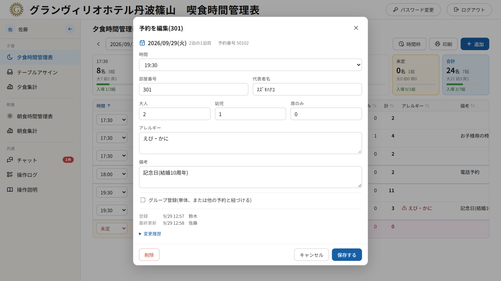
予約の編集画面(行をクリック)
- 「＋追加」で新しい予約、行をクリックで編集。日付は表示中の日付で登録されます。
- 泊数を2以上にすると、翌日以降の分も自動で登録されます(新規のみ)。
- 「グループ登録」: 「なし(この予約だけでグループ)」または同じ日の他の予約を選んで紐づけます。
- 画面の下に、登録・更新・削除の日時と担当者、変更履歴が出ます。
- 「削除」は取り消せます。「削除済みも表示」にチェックを入れて削除済みの行を開き、「復元」を押します。
時間を変える・入場済にする
- 行の時間のプルダウンを変えるとすぐ保存されます。テーブルを割り当て済みの予約は割り当てが外れます(卓メモがあるときは確認が出ます)。
- 「入場済」(夕食): レストランの担当者がチェックを入れ、「はい」で確定します。取り消しも同様です。
- 朝食の入場: 来た人数を「＋」「−」で数えます(大人・幼児・席のみの全員)。途中までなら「一部入場」(オレンジ)、全員そろうと「入場済」(緑)に自動で変わります。押し間違えたら「−」で戻せます。時間枠のカードのバーは、入場済が緑・一部入場がオレンジで表示されます。人数が0の予約(人数未入力)は、「＋」を1回押すと入場済になります。
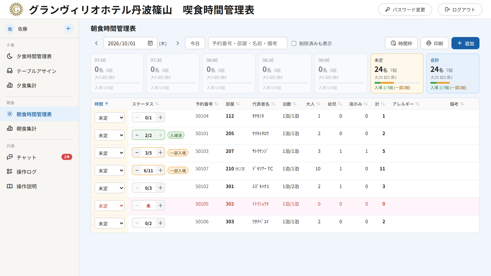
朝食時間管理表(「2/2」は入場済、「3/5」「6/11」は一部入場)
時間枠を追加・削除する
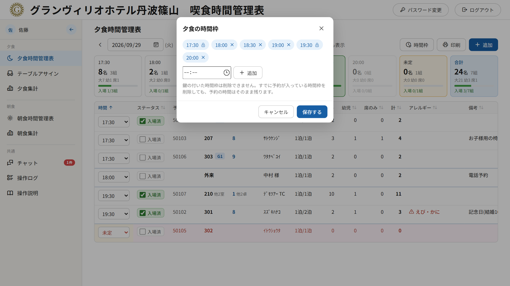
「時間枠」ボタン
- 時刻を選んで「追加」、×で削除し、「保存する」。
- 夕食の 17:30・19:30(鍵のマーク)は削除できません(CSVの⑰⑲に使うため)。
- 今日以降の予約で使っている時間枠は削除できません。先に予約の時間を変えてください。
印刷
「印刷」でA4横に印刷できます。削除済みの行とプルダウンは印刷されません。
3. CSVアップロード(宿泊者リストの取り込み)
フロント・管理者が、上部バーの「アップロード」から宿泊者リストを取り込みます。
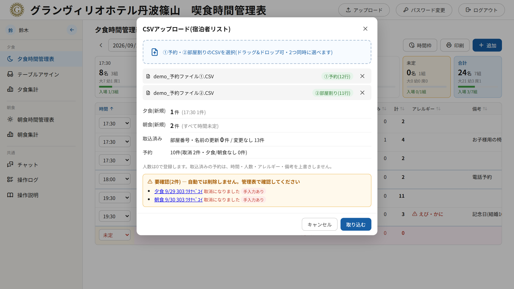
アップロード画面(2つのファイルを選んだところ。新規の件数と「要確認」が表示されています)
手順
- 「アップロード」を押し、①予約ファイル と ②部屋割りファイル の2つを選びます(ドラッグ＆ドロップ可。1つずつでも、同時でも、順番も問いません)。
- ファイルの種類は自動で判定されます(緑の「①予約」「②部屋割り」)。2つそろわないと取り込めません。
- 件数(夕食の時間別・朝食・更新・取消など)を確認し、「取り込む」を押します。
取り込みのルール
| 名前欄の印(「_」より後ろ) | 登録のされ方 |
|---|
| ⑰ | 夕食 17:30 |
| ⑲ | 夕食 19:30 |
| DN(⑰⑲なし) | 夕食・時間未定 |
| BF | 朝食(時間はすべて未定) |
- 夕食はチェックイン日〜チェックアウト前日、朝食はチェックイン翌日〜チェックアウト日。今日より前の日付は登録しません。
- 1つの予約の複数の部屋は1件にまとまります(部屋番号は「, 」区切り)。②に部屋がない予約は「未割当」。
- 人数は0で登録されます(管理表で入力してください)。代表者名は「_」より前の部分です。
- 同じファイルを取り込み直しても、手で入れた時間・人数・アレルギー・備考は上書きされません(部屋番号・名前・泊数だけ更新)。
要確認の表示: 以前取り込んだ予約が取消になった・対象外になった場合は、自動では削除せず「要確認」に一覧で出ます。リンクから管理表を開いて、必要なら削除してください。
4. テーブルアサイン
夕食の予約をレストランの卓に割り当てる画面です。左が見取り図、右が予約の一覧です。上で日付と時間枠を切り替えます(時間枠のボタンの「2/3組」は、全員が卓に座った組数/予約数)。
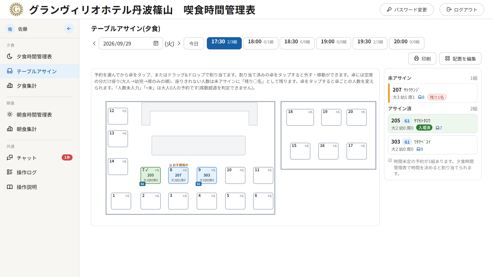
テーブルアサイン(17:30)。207は4名卓に4名が座り、残り1名が未アサインに残っています。卓8の上は卓メモの冒頭、卓7・9の左下の「G1」は同じグループの予約
予約を卓に割り当てる
- 右の「未アサイン」(左にオレンジの帯)から予約をクリックして選び、見取り図の卓をクリックします。パソコンでは予約カードを卓へドラッグ＆ドロップしてもかまいません。
- 卓には空席の分だけ座ります(大人→幼児→席のみの順)。満席の卓には割り当てられません。
- 座りきれない人数は「残り○名」として未アサインに残り、予約は選んだままです。続けて次の卓をクリックしてください。全員が座ると「アサイン済」に移ります。
右の予約カードと卓の画面にも、部屋番号の横にグループ(G1・G2…)が表示されます。同じグループを近くの卓にまとめるときの目安にしてください。
| 卓の表示 | 意味 |
|---|
| 青い卓 | 割り当てあり(部屋番号・大/幼/席の人数) |
| 緑の卓・✓ | 全員が入場済(一部なら緑の点線と(✓)) |
| 赤い枠・赤い人数 | 人数が席数を超えている |
| 人数未入力 / +未 | 大人0人の予約(人数を入れるまで席数の判定ができません) |
| 📝お子様用の | 卓メモの冒頭5文字 |
| 左下の色の札 G1 | グループ登録した予約(番号と色は夕食時間管理表と同じ。相席で別のグループがいれば札が並びます) |
| ⚠ | アレルギーのある予約 |
割り当て済みの卓をクリックすると
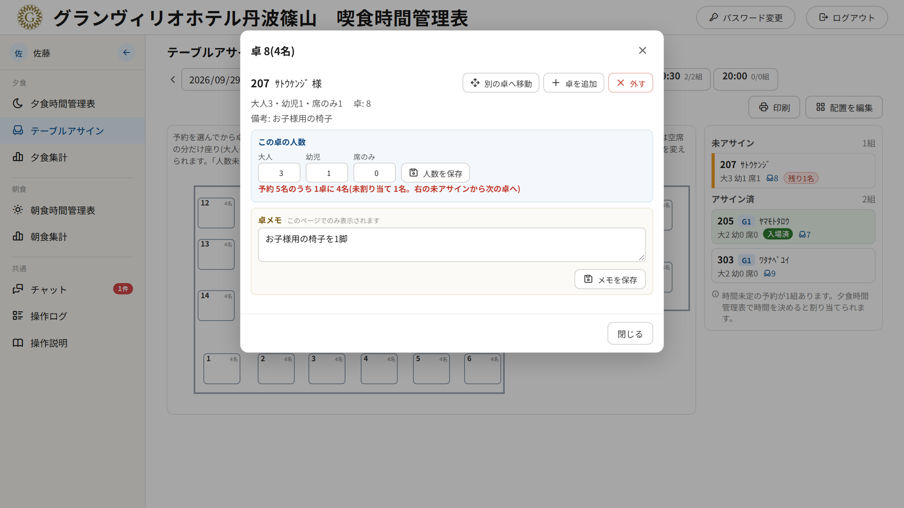
卓の画面(この卓の人数・卓メモ)
- 別の卓へ移動: 押してから移動先の卓をクリック。移動先の空席が足りないと移動できません。
- 卓を追加: 同じ予約を別の卓にも座らせます。
- 外す: この卓から外します(卓メモも消えるので確認が出ます)。
- この卓の人数: 大人・幼児・席のみの内訳を変えて「人数を保存」。席数と予約の人数を超えられません。減らした人数は未アサインに戻ります。
- 卓メモ: 入力して「メモを保存」。卓の上に冒頭5文字が表示されます。内容はこのページでしか見られません。卓を移動してもメモは引き継がれ、外すと消えます。
- 相席の卓では「この卓の全員を移動」も使えます。卓をドラッグしても全員を移動できます。
注意: 管理表で予約の時間を変えたり削除したりすると、割り当てと卓メモは外れます。人数を減らすと後ろの卓から自動で減り、増やすと増えた分が未アサインに戻ります。
配置を編集する(管理者・レストラン)
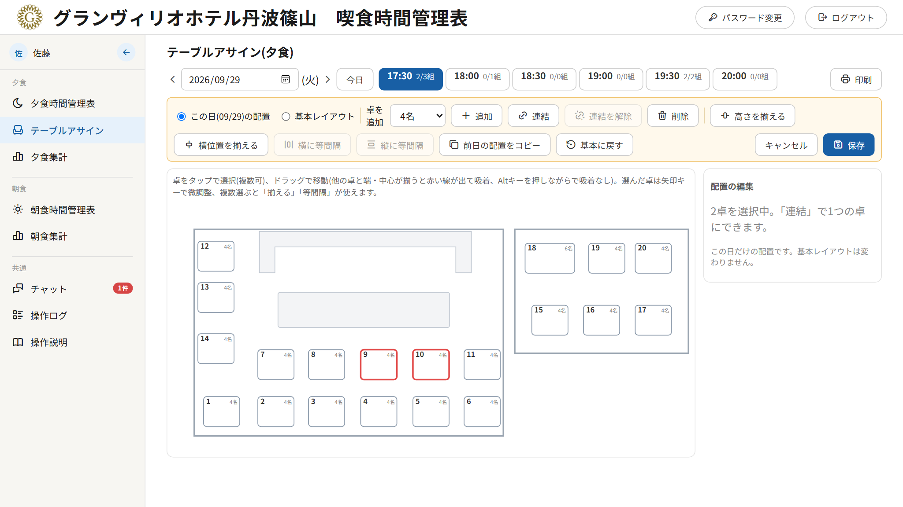
配置の編集(卓9・10を選択中)
- 「配置を編集」を押し、「この日の配置」か「基本レイアウト」を選びます。基本レイアウトは、配置を変えていない日とこれから割り当てる日に使われます。
- 卓をクリックで選択(複数可)、ドラッグで移動。右側で卓番号・席数を変えられます。
- 卓の追加(2・4・6名)、削除、連結(選んだ卓を1つに)・連結を解除、前日の配置をコピー、基本に戻す。
- 位置合わせ: ドラッグ中に他の卓と端・中心がそろうと赤い点線が出て吸い付きます(Alt を押しながらで吸い付かない)。「高さを揃える」「横位置を揃える」「横に等間隔」「縦に等間隔」、矢印キーで微調整(Shift で10ずつ)。
- 最後に「保存」。やめるときは「キャンセル」。
5. 夕食集計・朝食集計
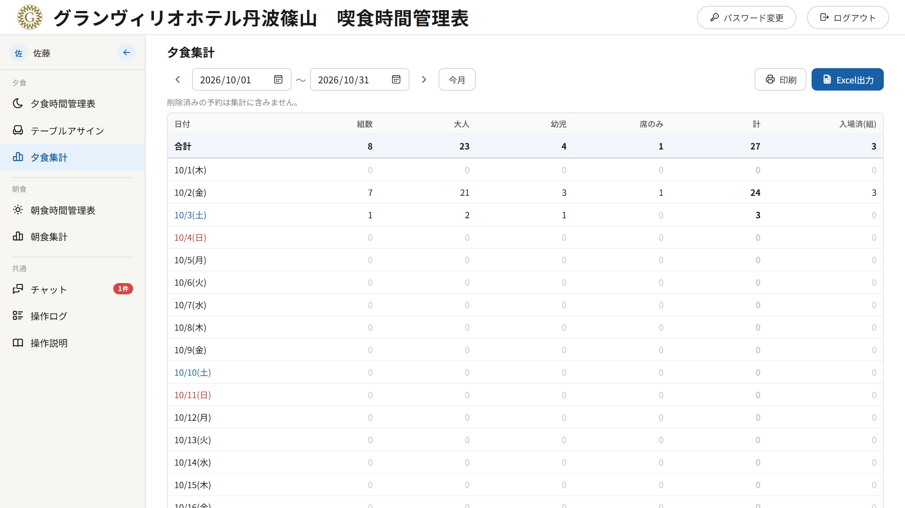
夕食集計
- 期間を指定して、日ごとの組数・大人・幼児・席のみ・計・入場済(組)を集計します(初期は今月、最長1年)。朝食集計には「一部入場(組)」の列もあります。
- 「計」は管理表と同じく、夕食は大人＋幼児、朝食は大人＋幼児＋席のみです。
- 2行目が合計。土曜は青、日曜は赤。日付をクリックするとその日の管理表を開きます。
- 「印刷」(A4横)と「Excel」で出力できます。削除済みの予約は含みません。
6. チャット
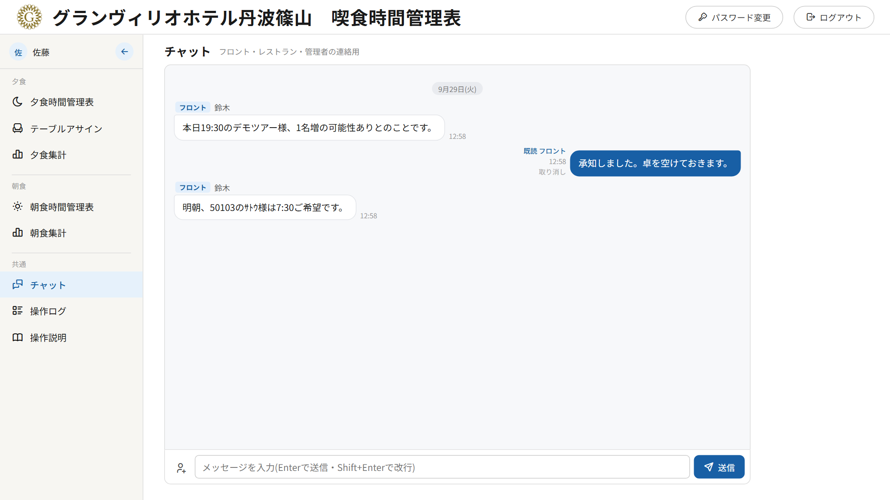
チャット
- 全員共通のチャットです。Enter で送信、Shift+Enter で改行。
- 自分の発言は右(青)、相手の発言は左にロールの印付きで表示。読まれると「既読 レストラン」のように出ます。
- 人のアイコンのボタンで、予約(お客様)を紐づけて送れます。受け取った人はカードをクリックすると管理表の該当行が開きます。
- 自分の発言は取り消せます(「メッセージの送信を取り消しました」と表示)。
7. 操作ログ
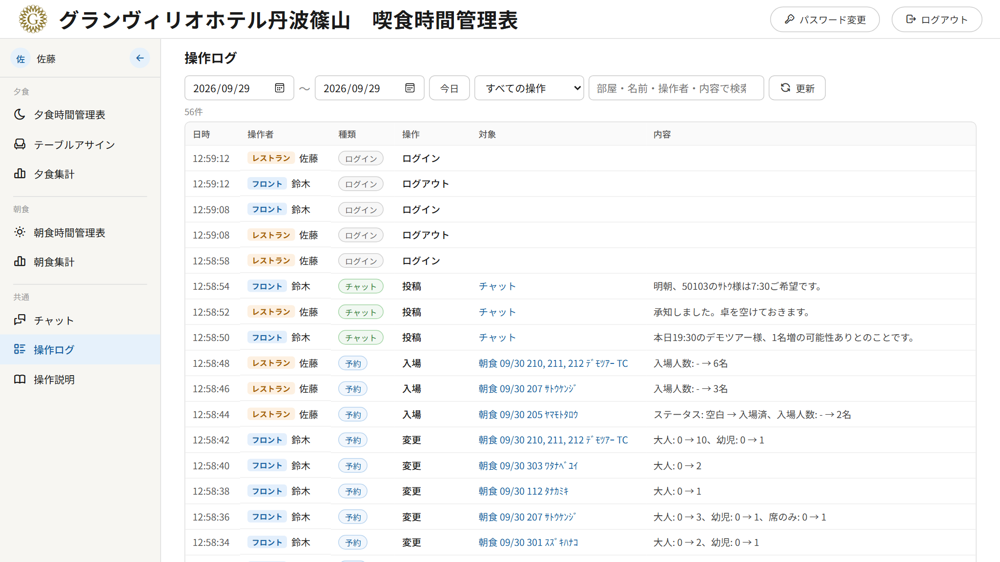
操作ログ
- 誰が・いつ・何をしたかを新しい順に表示します(予約の登録・変更・削除・入場済・CSV取込・テーブル、チャット、ログイン)。
- 期間(初期は今日、最長93日)・種類・キーワードで絞り込めます。ログインの失敗は赤い行です。
- 予約の行の対象をクリックすると管理表の該当行が開きます。卓メモは「卓メモを変更」とだけ記録され、内容は出ません。
8. 管理者ページ
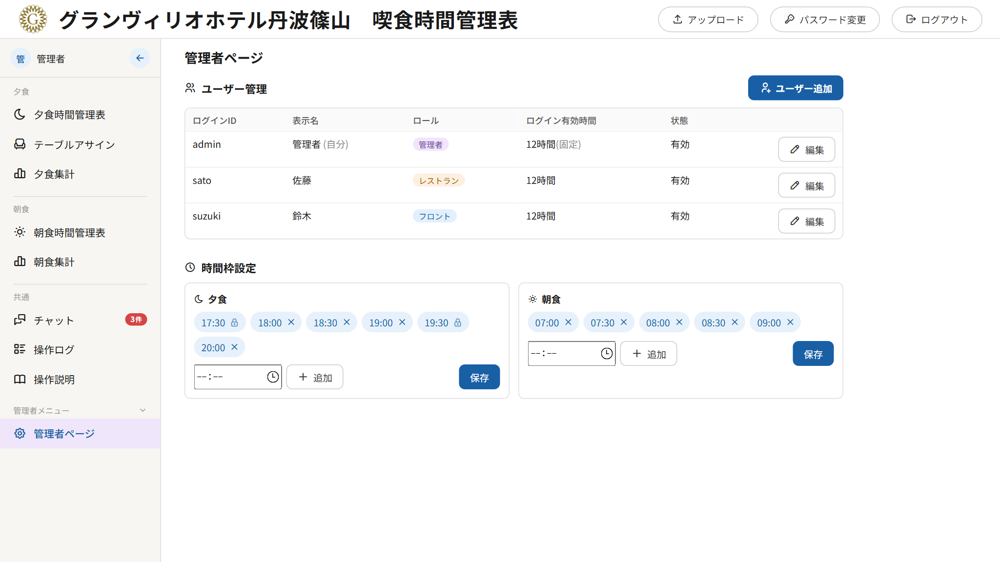
管理者ページ
- ユーザー管理: ユーザーの追加、表示名・ロールの変更、有効/無効、パスワードの再設定。自分自身のロール変更・無効化はできません。developer のアカウントは developer だけが操作できます。
- 時間枠設定: 夕食・朝食の時間枠(管理表の「時間枠」ボタンと同じ)。
9. 困ったときは
| こんなとき | こうしてください |
|---|
| 画面が古いまま・ボタンが見当たらない | ブラウザを再読み込み(F5)してください。画面は30秒ごとに自動で更新されます。 |
| 急にログイン画面になった | ログインの有効期限(12時間)が切れました。もう一度ログインしてください。 |
| 予約を間違えて削除した | 「削除済みも表示」→ 行を開いて「復元」。テーブルの割り当てと卓メモは戻りません。 |
| 卓に割り当てられない | 満席、または時間未定の予約です。空いている卓を選ぶか、管理表で時間を決めてください。 |
| 予約が未アサインから消えない | まだ座っていない人数(残り○名)があります。次の卓に割り当ててください。 |
| ピンクの行がある | 大人が0人(人数未入力)です。人数を入力してください。 |
| CSVの「取り込む」が押せない | ①予約と②部屋割りの両方を選んでください。 |
| 時間枠を削除できない | 17:30・19:30は削除できません。他の枠は、今日以降の予約の時間を変えてから削除してください。 |
| パスワードを忘れた | 管理者に「パスワード再設定」を依頼してください。 |